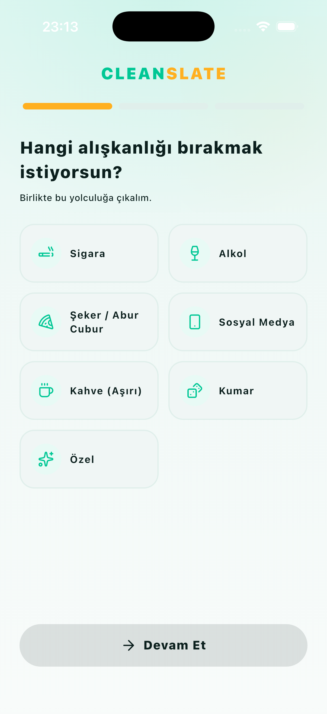
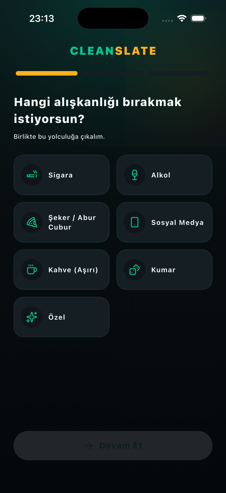
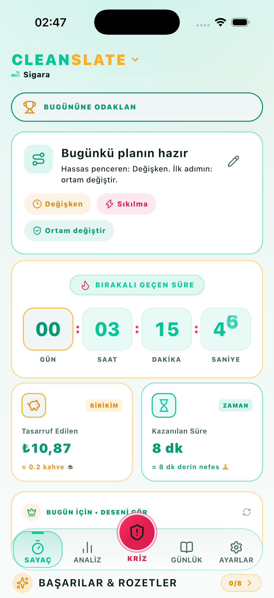
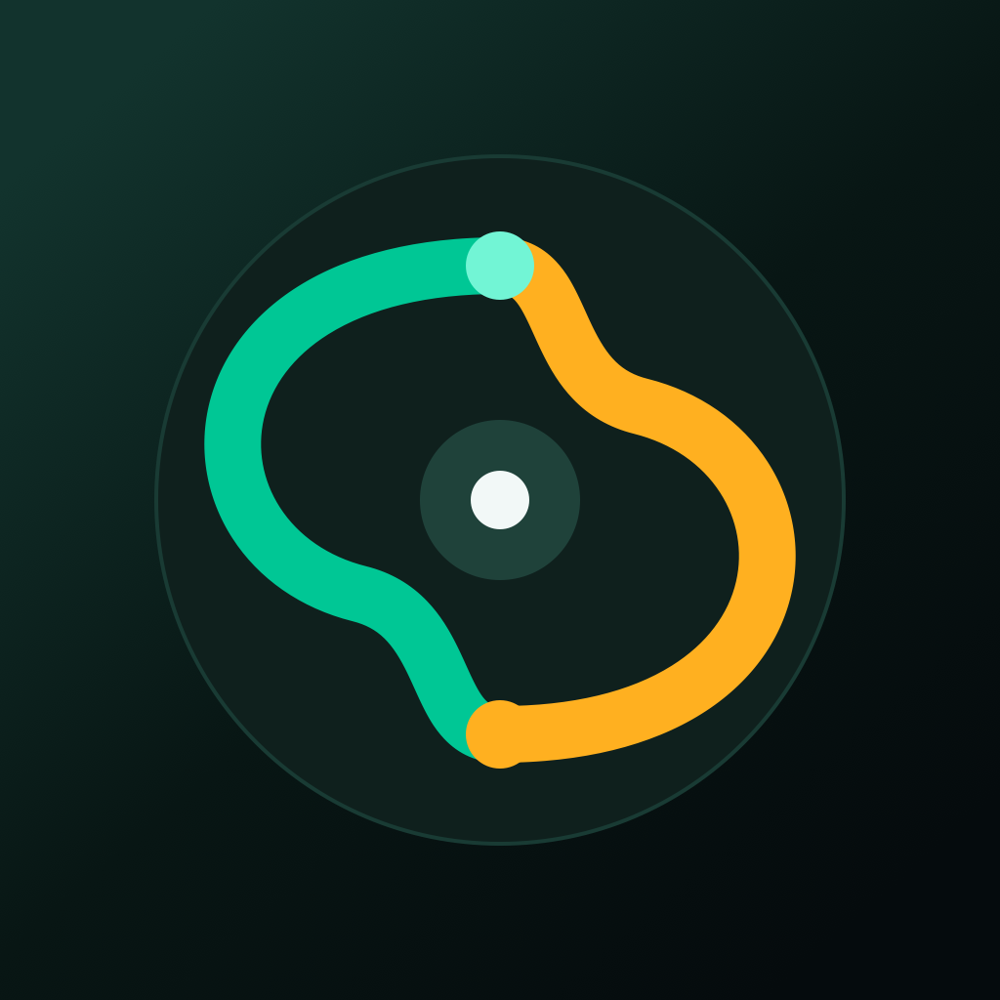

Tetikleyicilerini fark et,
zincirleri kır.
Bilişsel davranışçı teknikler, kriz anı odaklanma paneli ve motive edici temiz gün sayacı.
Rewire, olumsuz alışkanlıkları sağlıklı rutinlerle değiştirmek isteyenler için bilimsel temelli bir farkındalık yolculuğu sunar.

Öne Çıkan Özellikler
En ince ayrıntısına kadar düşünülmüş kullanım kolaylığı ve işlevsellik.
Kriz Odaklanma Paneli
Zor anlarda iradenizi korumanız için yönlendirmeli nefes ve dikkat egzersizleri.
Temiz Gün Sayacı
İlerlemenizi somut gün sayıları ve kazanılan başarı rozetleriyle izleyin.
Tetikleyici Analitiği
Hangi saatlerde ve ortamlarda tetiklendiğinizi grafiklerle keşfedin.
Bilişsel Rehberlik
Dürtüleri yönetmek için kanıtlanmış psikolojik başa çıkma stratejileri.
Kişisel Gizlilik
Duygu günlüğünüz ve ilerleme verileriniz tamamen şifreli ve cihazda kalır.
Şefkatli Yaklaşım
Kayıplarda moralinizi bozmadan yeniden başlamanızı destekleyen dil.
Uygulamadan görünümler
Özenle tasarlanmış modern kullanıcı arayüzü.



Üretkenliğinizi bir üst seviyeye taşıyın
Hemen keşfedin ve PixelFlow ekosistemine katılın.